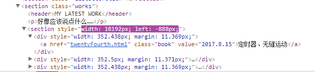
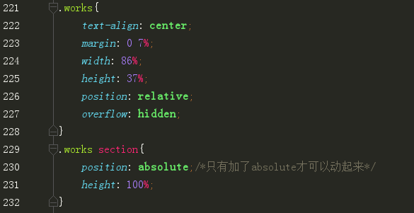
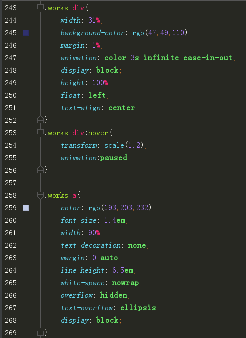
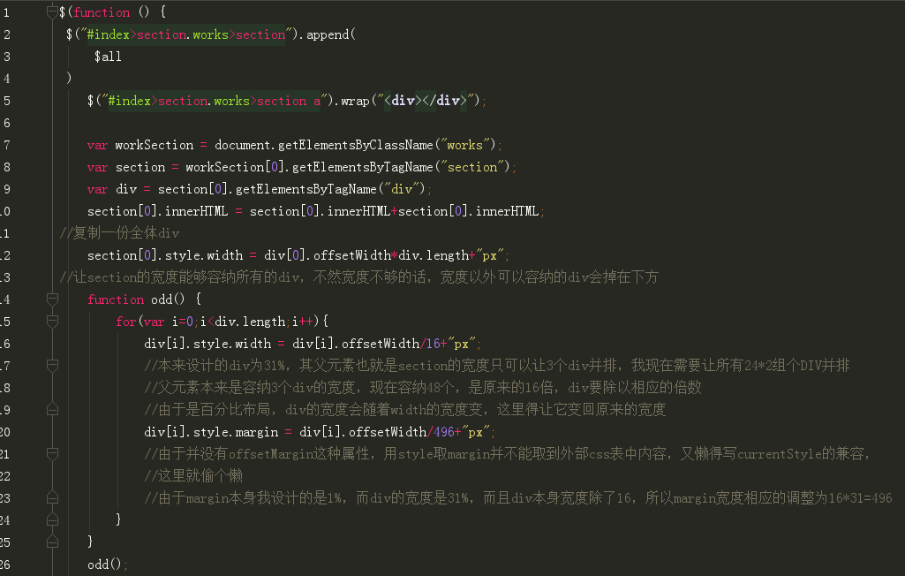
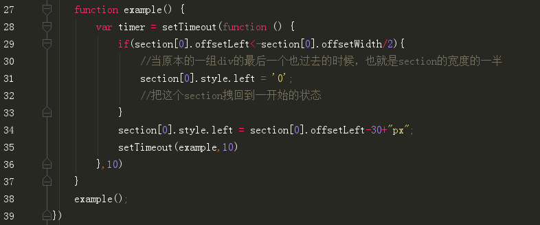

1.无缝运动应用
就现在首页最下方这个the latest work的滚动效果啦
先写个最普通的效果，之后应该还会写几篇加点更方便的小功能的博客，像是左移、右移加速，移入暂停之类。 另外，这么写好像还导致了一点兼容问题，在移动端上DIV块有点丑，之后也会改进
这里有一个大写加粗的注意点！不过是基础不牢固导致的。。。
使用jQuery添加到html中的元素，无法在另一个js文档中获取到，但是如果用同样使用jQuery写的js文档可以获取到
直接贴代码吧，其他遇到的问题都写在注释里啦
HTML
由于这部分是引入了一个包含着我所有链接的js(jQuery写的)，所以就截个F12的图了，本身写的html文档里没东西
CSS
 JS
多说一句，用setTimeout是因为红宝书P205页写，使用超时调用来模拟间歇调用是一种最佳模式， 在开发环境下，很少使用真正的间歇调用，原因是后一个间歇调用可能会在前一个间歇调用结束之前启动
 